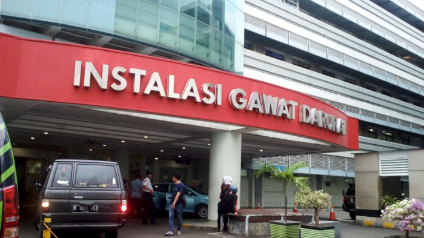

Pelayanan Darurat
RS. Alcapone menyelenggarakan pelayanan rawat darurat secara terus menerus selama 24 jam, 7 hari dalam seminggu. RS. Alcapone melaksanakan pelayanan gawat darurat level IV, yang memberikan pelayanan sbb :
- Diagnosis dan penanganan permasalahan pada Airway, Breathing, Circulation dengan alat-alat yang lebih lengkap termasuk ventilator
- Penilaian disability, penggunaan obat, EKG, defibrilasi
- Observasi/ Ruang Resusitasi
- Bedah cito
Sarana yang tersedia untuk pelayanan gawat darurat terdiri dari :
- Ruang Triage
- Ruang Resusitasi
- Ruang Tindakan yaitu : Ruang Tindakan Bedah, Medikal, Anak, serta Obgyn
- Ruang Isolasi untuk pasien infeksi
- Ruang Dekontaminasi
- Ruang Ruang Observasi
- IHC (Intermediate High Care)
- Ruang Transit Rawat Inap